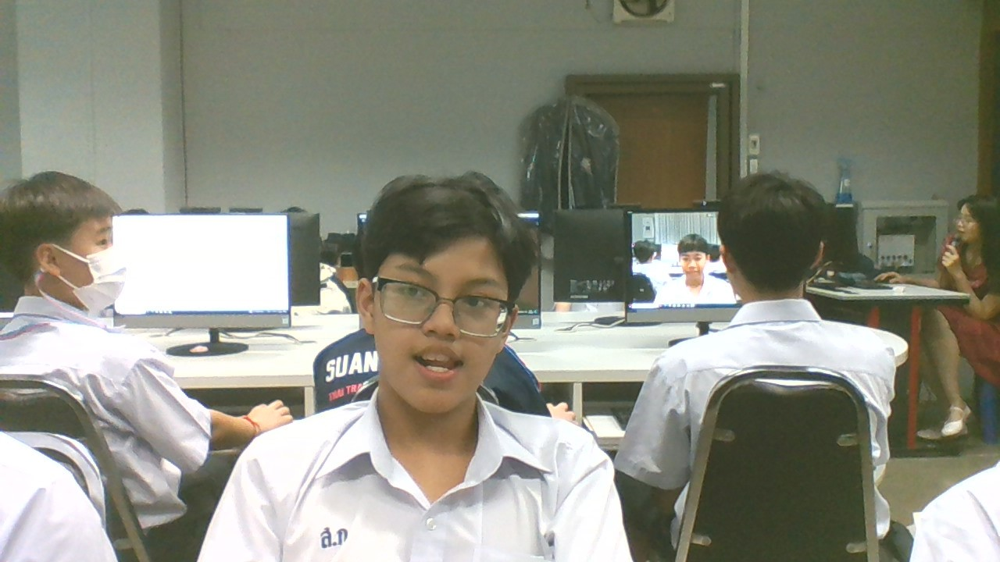

ครูในความทรงจำ..ที่ไม่ลืมเลือน 2568
น.ส.กุนนที วงศ์ชัยอุดมโชค : ขอบคุณที่เป็นครูที่ปรึกษาคนแรกที่ดีครับ
บทเพลงที่มอบให้ครู
นายสิงหา สุวรรณศรี : ครูเป็นคนอารมณ์ดีและสอนสนุกมากครับ
บทเพลงที่มอบให้ครู
>

ด.ช. ฐานัส ออมแก้ว 210 25